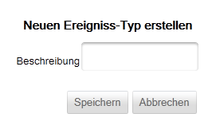

Ereignistyp anlegen
Um einen neuen Ereignistyp anlegen zu können, müssen Sie nur eine entsprechende Beschreibung angeben.

Sie müssen darauf achten, dass die Beschreibung weder leer noch nur aus Leerzeichen bestehen darf. Sollte dies dennoch der Fall sein, wird Ihnen die Anwendung bei der Speicherung die folgende Fehlermeldung anzeigen und die Erstellung des Ereignistyps unterbinden, bis Sie eine gültige Beschreibung angegeben haben.
TODO: Screen der Fehlermeldung einfügen
Speichern/verwerfen
Um den Ereignistyp zu speichern, klicken Sie auf oder um die Eingaben zu verwerfen auf  .
.
Created with the Personal Edition of HelpNDoc: Free HTML Help documentation generator